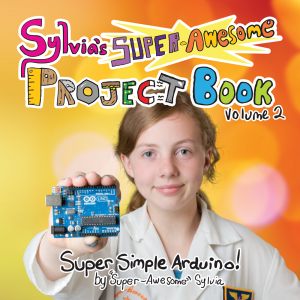

Project Books and White House Maker Faire
For those that missed it, Sylvia has been working like crazy for months cooking up a brand new set of real life project books! ...also she's been invited to attend the White House for their very first Maker Faire on Wednesday June 18th, 2014!

Announced as her surprise project at Maker Faire Bay Area 2014, "Sylvia's Super-Awesome Project Book" series is going to be a set of books published by CMK Press featuring project topics from various episodes, along with a bunch more in-depth details and project extras that we just couldn't cover in the show. First book should be out late July 2014, titled Super-Simple Arduino.
Happening a little sooner, Sylvia (along with me, CraftNinja mom and little sister Terrific Talulah) will be in Washington D.C. this week for the very first White House Maker Faire, thanks in part to travel sponsor Atmel's unwavering dedication to education and the young Maker community, they rock!

For the majority of Makers wishing to take part in the festivities, don't worry! June 18th has been officially proclaimed as the National Day of Making. Get together with your local maker space, hacking group, or just your family, and get out there and make something! Post pictures and use the hash-tag #nationofmakers to let the world know that you're doing your part and making something awesome together. There's tons of other suggestions on the Day of Making site, so go check it out!
We'll be tweeting from the event live as long as we've got connectivity, so check @MakerSylvia for updates before, during, and after for all the fun and surprises we're bound to find there.
Good luck makers, young, old, and future. Lets all get out there and make something this June 18th and prove we are (even around the world) a #nationofmakers.